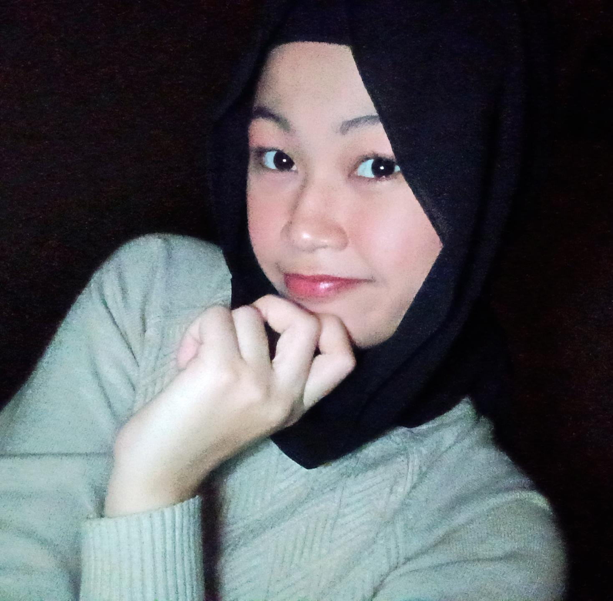

About Me

Maura Khairin
Mahasiswa (18 Tahun)
Lokasi: Sumatera Utara, Indonesia
Haii, saya Maura Khairin Amri Simatupang, seorang mahasiswa tahun pertama di program studi Ilmu Komputer, Universitas Negeri Medan.
Sebagai mahasiswa baru yang penuh rasa ingin tahu, saya sedang mengeksplorasi dunia desain grafis dan pemrograman dengan antusiasme yang tinggi. Portofolio ini adalah langkah pertama saya dalam mendokumentasikan setiap perjalanan belajar, eksperimen kreatif, dan pencapaian-pencapaian kecil yang saya miliki.
Meskipun baru memulai, saya percaya bahwa semangat belajar dan kemauan untuk terus berkembang adalah kunci dalam menghasilkan karya yang bermakna.
Education
- SD Negeri 117876 Torgamba (2013 - 2019)
- SMP Negeri 6 Torgamba (2019-2022)
- SMA Negeri 1 Torgamba (2022-2025)
Experience
- Menjadi bagian organisasi intra sekolah (OSIS) selama masa sekolah menengah pertama(SMA). Mendapatkan posisi sebagai bendahara osis membangun karakter bertanggung jawab dalam diri saya terutama dalam pengelolahan keuangan osis serta hal ini menumbuhkan prinsip jujur dalam diri saya agar dapat membangun kepercayaan orang lain kepada saya.
- Terpilih menjadi perwakilan sekolah sebagai duta siswa putri kabupaten Labuhanbatu selatan yang mengembangkan rasa kepercayaan diri yang saya miliki.